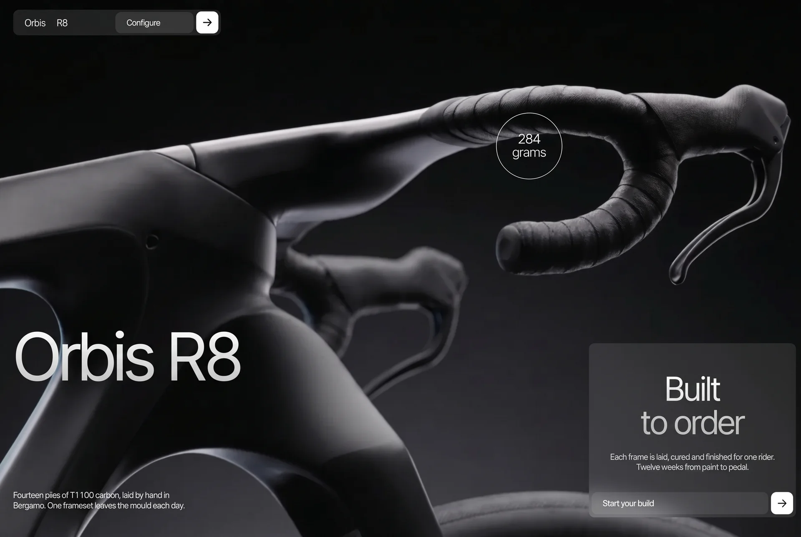

Monolithic
Luxuryluxuryyilai-ai 公开页面
收录时间：2026-09-11正文：45,142 字符

本地预览图 · webp
完整提示词
# PROMPT — Recreate the "ORBIS R8" scroll-scrubbed launch page, byte-for-byte in behaviour
You are building a single static web page called **ORBIS R8**: a full-screen, scroll-driven launch page for a fictional 6.4 kg hand-laid carbon road bike. Three video clips are scrubbed by scroll position, revealed one over the other with wipes, and the page ends with a 3D "dive" of a cut-out bike artwork that uncovers a spec sheet. Recreate it EXACTLY as specified below. Do not add, rename, restyle or "improve" anything. Every number, string, class, id, URL and order matters.
Deliverable: one folder containing exactly these files, no build step, no framework, no bundler, no npm dependencies:
```
index.html
style.css
main.js
README.md
.gitignore
.claude/launch.json
```
Serve over HTTP with `npx serve . -l 5183`. `file://` is explicitly unsupported (the clips are fetched with range requests and the frame banks read their bytes; both need a real HTTP origin). The page needs an internet connection: every asset stays remote.
---
## 0. Assets — use these exact URLs, nothing else
| Asset | URL / value |
|---|---|
| Clip 1 — cockpit, dark studio. 1920×1080, 24 fps, HEVC, 8.04 s / 193 frames | `https://d8j0ntlcm91z4.cloudfront.net/user_3GJaYKPxdnQG0Q9O26lu6DPmcHu/hf_20260910_120603_dfd888c4-e4f9-446a-a9e2-b68be265e832.mp4` |
| Clip 2 — the spokeless wheel. Walks itself from the dark studio into the white one at t≈4.0–4.6 s. 10.04 s / 241 frames | `https://d8j0ntlcm91z4.cloudfront.net/user_3GJaYKPxdnQG0Q9O26lu6DPmcHu/hf_20260910_120603_95daf329-7e85-43c8-afdd-81be7dc416f2.mp4` |
| Clip 3 — the sealed gearbox out to the whole bike, white studio. 8.04 s / 193 frames | `https://d8j0ntlcm91z4.cloudfront.net/user_3GJaYKPxdnQG0Q9O26lu6DPmcHu/hf_20260910_120602_ed765706-07ea-488f-8853-57b9229ff459.mp4` |
| The cutout — clip 3's last frame with the backdrop removed, alpha PNG, ~23 MB, intrinsic 5504×3072 | `https://i.ibb.co/SDws9KFm/bike-rock-transparent-1.png` |
| MP4Box.js (global `MP4Box` + global `DataStream`) | `https://cdn.jsdelivr.net/npm/mp4box@0.5.2/dist/mp4box.all.min.js` — loaded as `<script defer>` |
| Typeface — Inter Tight, weights 400 and 500 | `https://fonts.googleapis.com/css2?family=Inter+Tight:wght@400;500&display=swap` |
Font stack everywhere: `'Inter Tight', -apple-system, BlinkMacSystemFont, 'Segoe UI', sans-serif`.
---
## 1. The composition in one paragraph
Everything visual is `position:fixed` and stacked by z-index; the ONLY element in normal document flow is an empty `.runway` div that is 1250vh tall on desktop, which gives the page its scroll distance. A single `requestAnimationFrame` loop reads `scrollY / (runway height − innerHeight)` = progress `p ∈ [0,1]` and writes numeric CSS custom properties (0→1) directly onto elements; CSS derives every opacity/transform/filter from those properties. There are NO scroll listeners, NO IntersectionObservers, NO timers driving motion, NO easing on type (type tracks the finger raw); smoothing exists in exactly one place — video time — plus polarity colour (see §5). The three clips are decoded into in-memory frame banks with WebCodecs so scrubbing paints from a `<canvas>` instead of seeking the `<video>`.
Scroll map (fractions of the 1250vh runway):
```
0.0000 → 0.2191 clip 1 scrubs (cockpit, dark) · screen 1 exits over [0.1565, 0.2035]
0.2191 → +wipe reveal A sweeps in from the RIGHT, growing leftward (wipe = 90vh of scroll)
0.2191 → 0.4539 clip 2 scrubs (wheel) · screen 2 in [0.2348,0.2817] → out [0.3913,0.4383]
0.3052 → 0.3443 polarity fallback flips dark→white (inside clip 2 — the footage walks into the white studio)
0.4539 → +wipe reveal B rises from the BOTTOM, growing upward
0.4539 → 0.6261 clip 3 scrubs (gearbox → whole bike, white). No chrome on top of it at all.
0.622 → 0.646 the cutout cross-fades onto clip 3's held last frame
0.646 → 0.672 the footage dissolves; the finale's white plate takes over
0.672 → 1.000 ONE continuous exit: the cutout descends, then grows, then blurs (polynomials of one --exit)
0.780 → 0.862 the title "Six point four kilograms." resolves (fade + 26px rise + blur → 0), smoothstepped
0.856 → 0.974 the spec rows rise one by one
```
Colours: only two. `--w: #ffffff` and `--k: #030303`. Every piece of chrome (text, pills, chips, rings, hairlines) has a **polarity** `--pol` (0 = white ink on dark plate, 1 = dark ink on white plate) that JS measures from the actual video pixels underneath each element and writes per element.
---
## 2. index.html — exact document
Write it exactly like this (no `<html>`, `<head>` or `<body>` tags — they are implicit). Keep the comments' intent; the ids/classes/attributes/text must match verbatim.
```html
<!doctype html>
<meta charset="utf-8">
<meta name="viewport" content="width=device-width, initial-scale=1, viewport-fit=cover">
<title>ORBIS R8</title>
<meta name="description" content="ORBIS R8 — a 6.4 kg hand-laid road bike, built to order in Bergamo.">
<meta name="theme-color" content="#030303">
<!-- Set before first paint: the entrance styles key off .js -->
<script>document.documentElement.classList.add('js')</script>
<link rel="preconnect" href="https://fonts.googleapis.com">
<link rel="preconnect" href="https://fonts.gstatic.com" crossorigin>
<link href="https://fonts.googleapis.com/css2?family=Inter+Tight:wght@400;500&display=swap" rel="stylesheet">
<link rel="stylesheet" href="style.css">
<a class="skip" href="#main">Skip to content</a>
```
**Clip layers** (decorative, `aria-hidden="true"`; `src` lives in markup so the load starts during parse; NO `crossorigin` attribute on the videos — the frame banks fetch the bytes separately with `fetch()`):
```html
<!-- CLIP 1 -->
<div class="stage" id="stage" aria-hidden="true">
<video id="v1" muted playsinline preload="auto" tabindex="-1" src="[CLIP 1 URL]"></video>
<canvas id="c1" class="plate" width="1280" height="720"></canvas>
</div>
<!-- CLIP 2 — preload=metadata: the bank's own fetch retrieves it, the element must not pull 14MB up front -->
<div class="reveal reveal--a" id="ra" aria-hidden="true">
<video id="v2" muted playsinline preload="metadata" tabindex="-1" src="[CLIP 2 URL]"></video>
<canvas id="c2" class="plate" width="1280" height="720"></canvas>
</div>
<!-- CLIP 3 -->
<div class="reveal reveal--b" id="rb" aria-hidden="true">
<video id="v3" muted playsinline preload="metadata" tabindex="-1" src="[CLIP 3 URL]"></video>
<canvas id="c3" class="plate" width="1280" height="720"></canvas>
</div>
<!-- The finale's opaque ground: before .outro in the DOM and at the same z, so the copy paints on top of it and under the cutout -->
<div class="plate-out" id="plateout" aria-hidden="true"></div>
<!-- THE CUTOUT. Loaded from data-src ~1.2s after load at low priority so it never competes with clip 1's frame bank -->
<div class="cut-wrap" aria-hidden="true">
<img class="cutout" id="cut" alt="" decoding="async" fetchpriority="low"
width="1920" height="1080"
data-src="https://i.ibb.co/SDws9KFm/bike-rock-transparent-1.png">
</div>
```
**Header pill** — 345×41 at (24,24), persistent on all screens. The pill, its nav and its action are three SEPARATE `.pol` probes (the pill's two ends routinely sit over different luminances):
```html
<header class="pill pol">
<nav class="pill-nav pol">
<a class="pill-mark" href="#main">Orbis</a>
<a href="#spec">R8</a>
</nav>
<div class="pill-act pol">
<span class="chip">Configure</span>
<a class="sq" href="#spec" aria-label="Configure yours">
<svg viewBox="0 0 16 16" width="16" height="16" aria-hidden="true" focusable="false">
<path d="M2.25 8h11.5M9 3.2 13.75 8 9 12.8" fill="none" stroke="currentColor"
stroke-width="1.4" stroke-linecap="round" stroke-linejoin="round"/>
</svg>
</a>
</div>
</header>
```
(That same 16×16 arrow SVG — path `M2.25 8h11.5M9 3.2 13.75 8 9 12.8`, stroke currentColor, width 1.4, round caps/joins — is reused in every `.sq` button below.)
**Main — the screens** (`.chrome` is the fixed chrome layer; each `.scr` is one full-viewport screen):
```html
<main id="main">
<div class="chrome">
<!-- SCREEN 1 — cockpit -->
<section class="scr scr--1" id="s1">
<div class="callout pol" style="--bx:900;--by:196">
<div class="badge pol">
<svg class="ring" viewBox="0 0 120 120" aria-hidden="true" focusable="false">
<circle cx="60" cy="60" r="59.5"/>
</svg>
<p class="b-read"><span class="b-val">284</span><span class="b-unit">grams</span></p>
</div>
</div>
<h1 class="display display--hero pol">Orbis R8</h1>
<p class="note pol">Fourteen plies of T1100 carbon,
laid by hand in Bergamo. One frameset leaves the mould each day.</p>
<aside class="card pol">
<div class="card-body">
<p class="card-title"><span>Built</span><span class="dim">to order</span></p>
<p class="card-note">Each frame is laid, cured and finished for one rider.
Twelve weeks from paint to pedal.</p>
</div>
<div class="card-act">
<span class="chip">Start your build</span>
<a class="sq" href="#spec" aria-label="Start your build">[arrow svg]</a>
</div>
</aside>
</section>
<!-- SCREEN 2 — the wheel -->
<section class="scr scr--2" id="s2">
<h2 class="display display--s2 pol">A wheel without<br>a single spoke</h2>
<div class="callout pol" style="--bx:1113;--by:550">
<div class="badge pol">
<svg class="ring" viewBox="0 0 120 120" aria-hidden="true" focusable="false">
<circle cx="60" cy="60" r="59.5"/>
</svg>
<p class="b-read"><span class="b-val">1291</span><span class="b-unit">grams</span></p>
</div>
</div>
<p class="note pol">One piece of carbon, cured in a
single mould. No spokes to true, nothing to catch the wind.</p>
</section>
<!-- SCREENS 3 and 4 are silent by design: clip 3 has no chrome on top of it -->
</div>
<!-- SPEC — z below the cutout, uncovered as the bike sinks out of frame -->
<section class="outro pol" id="spec">
<h2 class="display display--fin pol">Six point four<br>kilograms.</h2>
<div class="outro-foot">
<dl class="spec pol">
<div class="spec-row"><dt>Frame</dt><dd>T1100 monocoque<span>698 g</span></dd></div>
<div class="spec-row"><dt>Fork</dt><dd>Integrated crown<span>312 g</span></dd></div>
<div class="spec-row"><dt>Cockpit</dt><dd>One piece, 6° drop<span>284 g</span></dd></div>
<div class="spec-row"><dt>Wheelset</dt><dd>Spokeless carbon<span>1 291 g</span></dd></div>
<div class="spec-row"><dt>Gearbox</dt><dd>Sealed, 12 ratios<span>2 438 g</span></dd></div>
<div class="spec-row"><dt>Complete</dt><dd>As shown, size 54<span>6.4 kg</span></dd></div>
</dl>
<div class="card-act spec-act pol">
<span class="chip">Configure yours</span>
<a class="sq" href="#main" aria-label="Configure yours">[arrow svg]</a>
</div>
</div>
</section>
</main>
<!-- The only element in normal flow: scroll distance for the fixed layers -->
<div class="runway"></div>
<script defer src="https://cdn.jsdelivr.net/npm/mp4box@0.5.2/dist/mp4box.all.min.js"></script>
<script type="module" src="main.js"></script>
```
Note the spec-row spans use a normal space as thousands separator ("1 291 g", "2 438 g"). `.spec-row` elements do NOT carry a `--i` inline style (the CSS uses `var(--i,0)`, so all rows share one window).
---
## 3. style.css — exact stylesheet
Structure it with cascade layers declared first, in this order: `@layer reset, tokens, base, layout, components, motion, utilities;`. Immediately after that line register one property:
```css
@property --cin { syntax:'<number>'; inherits:false; initial-value:0 }
```
(`inherits:false` on purpose: `.scr` also carries an `--in`, and the callout must not pick that one up. Registered so it can be transitioned.)
### @layer reset
```css
*{ margin:0; padding:0; box-sizing:border-box }
html, body{ width:100%; overscroll-behavior:none; } /* house rule: no rubber-band, ever */
img, video, canvas, svg{ display:block; max-width:100% }
a{ color:inherit; text-decoration:none }
dl, dt, dd{ margin:0 }
```
### @layer tokens
The design is a 1470×900 Figma frame; every measure is expressed against `--u` = 1/1470 of the viewport width with px floors.
```css
:root{
--u: calc(100vw / 1470);
--w: #ffffff;
--k: #030303;
--pol: 0;
--fs-120: max(56px, calc(120 * var(--u)));
--fs-80: max(40px, calc(80 * var(--u)));
--fs-60: max(34px, calc(60 * var(--u)));
--fs-24: max(15px, calc(24 * var(--u)));
--fs-18: max(13px, calc(18 * var(--u)));
--fs-14: max(12px, calc(14 * var(--u)));
--font: 'Inter Tight', -apple-system, BlinkMacSystemFont, 'Segoe UI', sans-serif;
--track: -0.03em;
--gutter: max(16px, calc(24 * var(--u)));
--r: 8px;
--blur: blur(12px);
--ease-expo: cubic-bezier(.16,1,.3,1);
--ease-strong: cubic-bezier(.23,1,.32,1);
--runway: 1250vh;
--cut-scale: 1; /* handoff tuning: nudge until the artwork sits on its own last frame */
--cut-y: 0px;
--z-stage:0; --z-rev-a:5; --z-rev-b:7;
--z-outro:8; --z-cutout:9; --z-chrome:10; --z-pill:50;
}
*{ letter-spacing:var(--track) } /* on *, not body: em resolves per element */
```
Derived colours live on each POLARITY CLUSTER (`.pol`), never on `:root` (an unregistered custom property substitutes its `var()`s at the element that declares it; a `:root` declaration would freeze against `:root`'s `--pol:0`):
```css
.pol, .skip{
--ink: color-mix(in srgb, var(--w), var(--k) calc(var(--pol) * 100%));
--plate: color-mix(in srgb, var(--k), var(--w) calc(var(--pol) * 100%));
--ov: color-mix(in srgb, rgba(255,255,255,.10), rgba(3,3,3,.10) calc(var(--pol) * 100%));
--hairline: color-mix(in srgb, rgba(255,255,255,.16), rgba(3,3,3,.16) calc(var(--pol) * 100%));
--ink-fade: color-mix(in srgb, var(--ink), var(--plate) 35%);
--grad: linear-gradient(180deg, var(--ink) 0%, var(--ink-fade) 136.55%);
}
```
### @layer base
```css
body{
font-family:var(--font); font-weight:400;
background:var(--k); color:var(--w);
-webkit-font-smoothing:antialiased;
font-variant-numeric:tabular-nums;
}
.runway{ height:var(--runway) }
::selection{ background:var(--w); color:var(--k) }
:where(a):focus-visible{ outline:2px solid var(--ink, #fff); outline-offset:3px }
```
### @layer layout
Clip layers:
```css
.stage{ position:fixed; inset:0; z-index:var(--z-stage); background:var(--k);
opacity:calc(1 - var(--stage-out,0)); }
.stage video, .stage canvas{ position:absolute; inset:0; width:100%; height:100%; object-fit:cover; }
/* Reveal A: anchored RIGHT, grows leftward; media pinned right at 100vw so the picture never slides with the box */
.reveal{ position:fixed; top:0; right:0; height:100%;
width:calc(var(--reveal,0) * 100vw);
overflow:hidden; pointer-events:none; background:var(--k); }
.reveal--a{ z-index:var(--z-rev-a) }
/* Reveal B: bottom-anchored, grows UP, white ground. The dissolve releases only the footage; the white box stays as the final plate */
.reveal--b{ z-index:var(--z-rev-b); background:var(--w);
top:auto; bottom:0; right:0;
width:100vw; height:calc(var(--reveal,0) * 100vh); }
.reveal--b video, .reveal--b canvas{ opacity:calc(1 - var(--dissolve,0)); top:auto; bottom:0; height:100vh; }
.reveal video, .reveal canvas{ position:absolute; top:0; right:0; width:100vw; height:100%; object-fit:cover; }
/* hairline on the leading edge of the wipe, alive only while it travels */
.reveal::before{ content:''; position:absolute; left:0; top:0; bottom:0; width:1px;
background:rgba(255,255,255,.22); opacity:var(--edge,0); }
.reveal--b::before{ left:0; right:0; top:0; bottom:auto; width:auto; height:1px }
.is-covered{ visibility:hidden }
```
The cutout — ONE continuous move derived from a single `--exit` as polynomials (descent leads alone; growth and blur are remapped to start later, each squared so it eases in from zero velocity; nothing touches opacity during the exit):
```css
.cut-wrap{ position:fixed; inset:0; z-index:var(--z-cutout); pointer-events:none; }
.cutout{
position:absolute; inset:0; width:100%; height:100%; object-fit:cover;
opacity:var(--cut,0);
transform-origin:50% 50%;
--e2:calc(var(--exit,0) * var(--exit,0));
--e3:calc(var(--e2) * var(--exit,0));
--eg:clamp(0, calc((var(--exit,0) - .45) / .55), 1);
--eb:clamp(0, calc((var(--exit,0) - .55) / .45), 1);
transform:translateY(calc(var(--e2) * 75vh + var(--e3) * 80vh + var(--cut-y)))
scale(calc(var(--cut-scale) * (1 + var(--eg) * var(--eg) * 1.8)));
}
.cutout.is-diving{ filter:blur(calc(var(--eb) * var(--eb) * 64px)); } /* gated behind the class: a permanent blur(0) forces a render surface */
.plate-out{ position:fixed; inset:0; z-index:var(--z-outro); background:var(--w);
opacity:var(--vidfade,0); pointer-events:none; }
```
Screens and type positions:
```css
.chrome{ position:fixed; inset:0; z-index:var(--z-chrome); pointer-events:none }
.scr{ position:absolute; inset:0 }
.display{ position:absolute; margin:0 }
.display--hero{ left:var(--gutter); bottom:calc(228 / 900 * 100%); font-size:var(--fs-120); }
.display--s2{ left:var(--gutter); bottom:calc(523 / 900 * 100%); font-size:var(--fs-80); }
.note{ position:absolute; left:var(--gutter); bottom:calc(33 / 900 * 100%);
width:max(260px, calc(305 * var(--u)));
font-size:var(--fs-14); line-height:calc(17 / 14); }
.note--right{ left:calc(1105 / 1470 * 100%); bottom:auto; top:calc(369 / 900 * 100%); } /* present, unused */
```
The callout (a ring and nothing else), positioned from inline `--bx/--by` in Figma pixels, with a small parallax drift across the screen's whole span:
```css
.callout{ position:absolute;
left:calc(var(--bx) / 1470 * 100%); top:calc(var(--by) / 900 * 100%);
transform:translateY(calc((0.5 - var(--par,0.5)) * 56px)); }
.badge{ position:relative; width:max(96px, calc(120 * var(--u))); aspect-ratio:1;
display:flex; align-items:center; justify-content:center; text-align:center; }
.ring{ position:absolute; inset:0; width:100%; height:100%; overflow:visible }
.ring circle{ fill:none; stroke:var(--ink); stroke-width:1;
stroke-dasharray:374; /* 2π·59.5 */
stroke-dashoffset:calc((1 - var(--draw,0)) * 374);
transform:rotate(-90deg); transform-origin:50% 50%; }
```
The card (bottom-right glass panel):
```css
.card{ position:absolute; right:var(--gutter); bottom:var(--gutter);
width:max(300px, calc(345 * var(--u))); padding:4px;
display:flex; flex-direction:column; gap:max(26px, calc(36 * var(--u)));
background:var(--ov);
backdrop-filter:var(--blur); -webkit-backdrop-filter:var(--blur);
border-radius:var(--r); }
.card-body{ padding:max(32px, calc(48 * var(--u))) 16px 0;
display:flex; flex-direction:column; gap:max(18px, calc(24 * var(--u))); }
```
The header pill:
```css
.pill{ position:fixed; top:var(--gutter); left:var(--gutter); z-index:var(--z-pill);
width:max(300px, calc(345 * var(--u))); height:max(37px, calc(41 * var(--u)));
padding:4px 4px 4px 16px;
display:flex; justify-content:space-between; align-items:center;
background:var(--ov);
backdrop-filter:var(--blur); -webkit-backdrop-filter:var(--blur);
border-radius:var(--r); }
.pill-nav{ display:flex; gap:16px; font-size:var(--fs-18); color:var(--ink) }
.pill-nav a{ pointer-events:auto }
```
The outro (z 8 — UNDER the cutout at 9; one centred group that does NOT travel; occlusion does the work):
```css
.outro{ position:fixed; inset:0; z-index:var(--z-outro); padding:var(--gutter);
display:flex; flex-direction:column; align-items:center; justify-content:center;
gap:max(36px, calc(48 * var(--u))); pointer-events:none; }
.display--fin{ position:static; font-size:var(--fs-80); text-align:center; white-space:nowrap;
opacity:var(--fin,0);
transform:translateY(calc((1 - var(--fin,0)) * 26px)); }
.outro.is-anim .display--fin{ filter:blur(calc((1 - var(--fin,0)) * 12px)) }
.outro-foot{ display:flex; flex-direction:column; align-items:center;
gap:max(20px, calc(32 * var(--u))); width:min(720px, 100%) }
.spec{ width:min(720px, 100%) }
.spec-row{ display:grid; grid-template-columns:minmax(96px, 1fr) 2.4fr; gap:16px;
padding:max(8px, calc(11 * var(--u))) 0;
border-top:1px solid var(--hairline); }
.spec-row:last-child{ border-bottom:1px solid var(--hairline) }
.spec dd{ display:flex; justify-content:space-between; gap:1em }
```
### @layer components
```css
.display{ font-weight:400; line-height:1;
background:var(--grad);
-webkit-background-clip:text; background-clip:text;
-webkit-text-fill-color:transparent; color:transparent; }
.display, .b-read{ padding-bottom:.08em } /* absorbs the blur radius so clipped glyphs don't shear mid-blur */
.note{ color:var(--ink) }
.b-read{ position:relative; font-size:var(--fs-24); line-height:1;
background:var(--grad);
-webkit-background-clip:text; background-clip:text;
-webkit-text-fill-color:transparent; color:transparent;
opacity:var(--val,0);
transform:translateY(calc((1 - var(--val,0)) * .22em)); }
.callout.is-anim .b-read{ filter:blur(calc((1 - var(--val,0)) * 7px)) }
.b-val, .b-unit{ display:block }
.card-title{ font-size:var(--fs-60); line-height:1; text-align:center;
background:var(--grad);
-webkit-background-clip:text; background-clip:text;
-webkit-text-fill-color:transparent; color:transparent; }
.card-title span{ display:block }
.card-note{ font-size:var(--fs-14); line-height:calc(17 / 14); text-align:center; color:var(--ink); }
/* chip + arrow-square: one system for the pill's action row and the card's */
.card-act{ display:flex; gap:4px; align-items:stretch }
.chip{ flex:1 1 auto; display:flex; align-items:center;
padding:8px 48px 8px 16px;
background:var(--ov); border-radius:var(--r);
font-size:var(--fs-14); font-weight:500; line-height:calc(17 / 14);
color:var(--ink); white-space:nowrap; }
.pill-act{ display:flex; gap:4px; align-items:center }
.pill-act .chip{ flex:none }
.sq{ flex:none; width:32px; height:32px;
display:flex; align-items:center; justify-content:center;
background:var(--ink); color:var(--plate);
border-radius:var(--r); pointer-events:auto;
transition:transform 160ms var(--ease-strong); }
.sq:active{ transform:scale(.94) }
@media (hover:hover) and (pointer:fine){ .sq:hover svg{ transform:translateX(1.5px) } }
.sq svg{ transition:transform 200ms var(--ease-strong) }
.spec dt{ font-size:var(--fs-14); font-weight:500; color:var(--ink) }
.spec dd{ font-size:var(--fs-14); color:var(--ink) }
.spec dd span{ opacity:.5 }
/* the page's last action: chip and square become one solid button, legible over anything */
.spec-act{ width:min(720px, 100%) }
.spec-act .chip{ flex:1; background:var(--ink); color:var(--plate); }
.skip{ position:fixed; top:8px; left:8px; z-index:100; padding:10px 14px;
background:var(--w); color:var(--k); font-size:var(--fs-14);
border-radius:var(--r); transform:translateY(-200%); }
.skip:focus{ transform:none }
/* frame-bank canvases: invisible until they paint for real */
canvas.plate{ opacity:0; transition:opacity 420ms ease }
canvas.plate.is-live{ opacity:1 }
```
### @layer motion
Contract: JS writes 0→1 custom properties ON the element (never `:root`); CSS derives everything; blur is gated behind `.is-anim`.
```css
.scr{ opacity:calc(var(--in,0) * (1 - var(--out,0)));
transform:translateY(calc((1 - var(--in,0)) * 26px + var(--out,0) * -40px)); }
.scr.is-anim{ filter:blur(calc((1 - var(--in,0)) * 6px + var(--out,0) * 12px)); }
.scr.is-hidden{ visibility:hidden }
.scr--1{ --in:1 } /* screen 1 is present at rest */
/* CALLOUT: the reading arrives FIRST, then the ring strokes itself around it; both windows sliced from one --cin */
.callout{ --val: clamp(0, calc(var(--cin,0) / .45), 1);
--draw:clamp(0, calc((var(--cin,0) - .40) / .60), 1); }
/* screen 1's ring draws as part of the load entrance */
.is-ready .scr--1 .callout{ --cin:1; transition:--cin 1500ms var(--ease-expo) 320ms; }
/* outro rows: per-row windows out of one --tail, smoothstepped */
.spec-row, .spec-act{
--t-row:clamp(0, calc((var(--tail,0) - var(--i,0) * .06) / .62), 1);
--w-row:calc(var(--t-row) * var(--t-row) * (3 - 2 * var(--t-row)));
opacity:var(--w-row);
transform:translateY(calc((1 - var(--w-row)) * 24px)); }
.outro.is-hidden{ visibility:hidden }
/* entrance at load — the rested state IS the design, correct with JS off */
.js .scr--1 > *, .js .pill{ opacity:0; filter:blur(10px); transform:translateY(14px) }
.is-ready .scr--1 > *, .is-ready .pill{
opacity:1; filter:none; transform:none;
transition:opacity 900ms var(--ease-expo), filter 900ms var(--ease-expo), transform 900ms var(--ease-expo); }
.is-ready .scr--1 > :nth-child(2){ transition-delay:80ms }
.is-ready .scr--1 > :nth-child(3){ transition-delay:160ms }
.is-ready .scr--1 > :nth-child(4){ transition-delay:240ms }
.js .scr--1 > .callout{ opacity:1; filter:none; transform:none } /* the ring draws itself; it must not also fade in as a block */
.is-ready .pill{ transition-delay:320ms }
/* end state asserted independently once the entrance has had its time (hidden tabs/headless barely tick transitions) */
.is-settled .scr--1 > *, .is-settled .pill{ opacity:1; filter:none; transform:none; transition:none; }
.is-settled .scr--1 .callout{ --cin:1; transition:none }
```
### @layer utilities
Reduced motion:
```css
@media (prefers-reduced-motion:reduce){
.scr, .spec-row, .spec-act, .cutout, .b-read{ transform:none !important; filter:none !important }
.callout{ transform:none !important }
.ring circle{ stroke-dashoffset:0 }
.is-ready .scr--1 > *, .is-ready .pill{ transition-duration:1ms }
canvas.plate{ transition:none }
.sq{ transition:none }
}
```
Mobile (`max-width:767px`) is its OWN composition: no scrub, no banks, no reveals; a plain vertical read in the single dark polarity:
```css
@media (max-width:767px){
:root{ --runway:auto; --gutter:16px }
.reveal, .cut-wrap{ display:none }
.chrome{ position:static; pointer-events:auto }
.scr{ position:static; inset:auto; min-height:auto; padding:12vh var(--gutter);
opacity:1 !important; transform:none !important; filter:none !important;
visibility:visible !important;
display:flex; flex-direction:column; gap:20px; align-items:flex-start; }
.scr--1{ min-height:92svh; justify-content:flex-end; padding-top:calc(24px + 56px) }
.display, .note, .card, .callout{ position:static; inset:auto; transform:none }
.display--fin{ white-space:normal; text-align:left }
.note{ width:100% }
.card{ width:100%; margin-top:8px }
.callout{ flex-direction:row !important; align-items:center; gap:12px }
.badge{ width:72px }
.ring circle{ stroke-dashoffset:0 }
.b-read{ opacity:1 !important; transform:none !important; filter:none !important }
.outro{ position:static; inset:auto; padding:12vh var(--gutter); visibility:visible !important; align-items:flex-start; }
.spec-row, .spec-act, .display--fin{ opacity:1 !important; transform:none !important }
.outro{ transform:none !important; gap:32px }
.outro-foot{ width:100% }
.chrome, .outro{ position:relative; z-index:1 }
.stage::after{ content:''; position:absolute; inset:0;
background:linear-gradient(180deg, rgba(3,3,3,.55), rgba(3,3,3,.92)); }
.runway{ display:none }
}
```
No-JS (`html:not(.js)`) collapses the same way (nothing can scroll a fixed composition): `.chrome` static with pointer-events auto; `.scr` static, visible, opacity 1, no transform/filter, flex column gap 20px align flex-start padding `12vh var(--gutter)`; `.scr--1{ min-height:88svh; justify-content:flex-end }`; `.display/.note/.card/.callout` static; `.display--fin` white-space normal, left-aligned, no transform, opacity 1; `.callout` row/center/gap 12px and `--cin:1`; `.badge{ width:72px }`; ring `stroke-dashoffset:0`; `.b-read` opacity 1 no transform/filter; `.pill` opacity 1 no filter/transform; `.reveal, .cut-wrap, .runway{ display:none }`; the same `.stage::after` gradient; `.outro` static visible padding `12vh var(--gutter)` align flex-start, no transform, gap 32px; `.spec-row, .spec-act` opacity 1 no transform; `.outro-foot{ width:100% }`; `.chrome, .outro{ position:relative; z-index:1 }`.
---
## 4. main.js — the engine (ES module, `type="module"`, no imports)
Write it in ES5-style `var`/function code (no classes, no async/await — promises only), one file, with these exact constants:
```js
var A = 0.2191, B = 0.4539, HOLD = 0.6261; // clip boundaries as fractions of the runway
var WIPE_VH = 90; // scroll distance per reveal, converted to a fraction at runtime
var S1_OUT = [0.1565, 0.2035];
var S2_IN = [0.2348, 0.2817], S2_OUT = [0.3913, 0.4383];
var POL = [0.3052, 0.3443]; // polarity FALLBACK ramp (used only when the pixel probe is unavailable)
var S1_PAR = [0.0000, 0.2035], S2_PAR = [0.2348, 0.4383]; // ring parallax spans
var CUT = [0.622, 0.646];
var VIDFADE = [0.646, 0.672];
var EXIT = [0.672, 1.000];
var FIN = [0.780, 0.862];
var TAIL = [0.856, 0.974];
var STAGE_FADE = [0.94, 1.00]; // stage fades inside reveal A's own tail
var LERP_TAU = 8; // video-time smoothing: 1 - exp(-dt*8), frame-rate independent
var SNAP = 0.002; // seconds; snap current→target below this
var LRU_MAX = 24; // decoded ImageBitmaps kept per clip
var LEAD = 24; // max live VideoFrames in flight during decode
var WATCHDOG = 60000; // ms per bank build before reverting to element scrub
```
Helpers: `clamp01`, `smoothstep(a,b,x)` (= t²(3−2t)), `segT(p,lo,hi)` = clamp01((p−lo)/(hi−lo)), `r3` (round to 3 decimals). `setVar(el,key,name,v)` rounds to 3 decimals and calls `el.style.setProperty(name, v)` ONLY if the memoised value for `key` changed (return the value). `setClass(el,key,cls,on)` toggles a class with the same memo.
Element handles: `root=document.documentElement`, `.runway`, `#stage`, `#ra`, `#rb`, `#cut`, `#spec` (the outro), `#plateout`, `.pill`, `.chrome`, `.cut-wrap`, `#s1`, `#s2`, and the videos/canvases `#v1/#c1`, `#v2/#c2`, `#v3/#c3`.
`reduced = matchMedia('(prefers-reduced-motion: reduce)').matches`; `mqNarrow = matchMedia('(max-width: 767px)')` kept LIVE (never snapshot innerWidth at load).
### 4.1 The cutout switch-on
`hasCut=false`; hide `.cut-wrap` (`display:none`) until the image loads. If `#cut` has `data-src`: on `load` → `hasCut=true`, un-hide the wrap; on `error` → `hasCut=false`. Assign `cutEl.src = cutEl.dataset.src` via `setTimeout(…, 1200)` once the document is `complete` (or on window `load`). While `hasCut` is false the dissolve and the exit are both skipped, so the last video frame simply holds as the plate.
### 4.2 Entrance
`showPage(raf)`: once only; add `is-ready` to `<html>` inside a `requestAnimationFrame` hop when called from `document.fonts.ready` (fallback: window `load`), and WITHOUT the hop from a 2500 ms failsafe timer (rAF never fires in a hidden document; never gate visibility on a frame that may not come). `settle()`: add `is-settled` once — from a 4000 ms timer AND from the RAF loop 1600 ms after the page was shown.
### 4.3 createClip(video, canvas) — one scrubbed clip + its frame bank
Never a replacement for the `<video>`: the element scrub stays wired and the canvas stays invisible until the bank paints for real, so any failure (no VideoDecoder, no MP4Box, bad fetch, decoder error) leaves the page exactly as it was.
- `ctx = canvas.getContext('2d', {alpha:false})`; `url = video.getAttribute('src')` (read from markup so the two can never disagree).
- State: `dur, current, target, bank[] ({ts:µs, blob}), lru: Map(index→ImageBitmap|null), drawnIndex=-1, ready, reverted, painted, building, buildRun`.
- `prime()`: `dur = video.duration||0`; set `video.currentTime = 0.001` in a try. Run it immediately if `readyState ≥ 1`, and on `loadedmetadata`. `video.pause()`.
- `nearestIndex(t)`: binary search on `bank[].ts` for `t*1e6` (lower bound).
- `warm(i)`: for offsets −1..+2, if index valid and not in `lru`, set `lru[j]=null` and `createImageBitmap(bank[j].blob)` → store; if `lru.size > LRU_MAX` evict from the oldest insertion, calling `.close()` on evicted bitmaps; on failure delete the key.
- `drawFromBank(t)`: `i = nearestIndex(t)`; if the bitmap exists and `i !== drawnIndex` → `ctx.drawImage(bm,0,0,C.width,C.height)`, record `drawnIndex`, and on the FIRST real paint (not on a timer) set `painted=true` and add class `is-live` to the canvas. Then `warm(i)`.
- `render(t)`: if `ready` → `drawFromBank(t)`; else (element fallback) if `!video.seeking && |video.currentTime − t| > 0.01` → `video.currentTime = t` in a try.
- `revert()`: `reverted=true; ready=false;` remove `is-live`.
- `build(soft)` returns a Promise; no-op (resolve) if already building, `reduced`, or `VideoDecoder`/`MP4Box`/global `DataStream` are undefined. Steps:
1. Watchdog `setTimeout(revert+finish, WATCHDOG)`; `finish()` idempotent (`settled` guard, clears watchdog, resolves); `fail()` = revert + finish (guarded).
2. `failDecode()`: decoder-stage failures get ONE retry with `hardwareAcceleration:'prefer-software'` (hidden tabs refuse the hardware decoder). On the first failure (`!soft`): mark settled, clear watchdog, close the decoder, reset `building=false`, clear `bank`/`lru`/`drawnIndex`, then `build(true).then(done)`. If already soft → `fail()`.
3. Offscreen `canvas` `off` (context created lazily, `{alpha:false}`, sized to `codedWidth×codedHeight`, defaults 1280×720); a promise `chain`; `samples[]`; `run = ++buildRun` (a late `toBlob` from an abandoned run must not push into the retry's bank).
4. Backpressure: counter `cnt` + `waiters`; `tickDone()` increments and resolves waiters whose `n ≤ cnt`; `until(n)` returns a promise.
5. `file = MP4Box.createFile()` (try/catch → fail).
6. `decoder = new VideoDecoder({ output(vf){ chain = chain.then(() => { if reverted {vf.close(); tickDone(); return} draw vf onto off; vf.close(); return promise of off.toBlob(blob => { if (blob && run===buildRun) bank.push({ts: vf.timestamp, blob}); tickDone(); }, 'image/webp', 0.82) }) }, error: failDecode })`.
7. `description(track)`: from `file.getTrackById(track.id).mdia.minf.stbl.stsd.entries[*]` take the first of `avcC|hvcC|vpcC|av1C`, write it into `new DataStream(undefined, 0, DataStream.BIG_ENDIAN)` and return `new Uint8Array(s.buffer, 8)`.
8. `file.onError = fail`. `file.onReady(info)`: first video track or fail; configure the decoder SYNCHRONOUSLY with `{codec: track.codec, codedWidth: track.video.width, codedHeight: track.video.height, description}` (+ `hardwareAcceleration:'prefer-software'` when `soft`) — never await `isConfigSupported`; `file.setExtractionOptions(track.id, null, {nbSamples: Infinity}); file.start()`.
9. `file.onSamples` only collects. `pump()` drives the decode: for each sample `decoder.decode(new EncodedVideoChunk({type: s.is_sync?'key':'delta', timestamp: s.cts*1e6/s.timescale, duration: s.duration*1e6/s.timescale, data: s.data}))`, and whenever `i − cnt > LEAD` wait `until(i − LEAD)` before continuing (each live VideoFrame is ~1.4 MB of GPU memory).
10. `fetch(url)` → `arrayBuffer` (non-OK → throw; `.catch(fail)`), then `buf.fileStart = 0; file.appendBuffer(buf); file.flush()` inside try/catch (a DataStream/appendBuffer throw is synchronous and must not be blamed on the network); no samples → fail. Then `pump().then(() => reverted ? null : decoder.flush()).then(() => chain).then(() => { if reverted or empty bank → finish(); bank.sort by ts (decode order ≠ display order); paint ONE frame before flipping ready: createImageBitmap(bank[nearestIndex(current)].blob) → lru.set, ready=true, drawFromBank(current) }).then(finish).catch(failDecode)`.
### 4.4 The three clips
`clips = [createClip(v1,c1), createClip(v2,c2), createClip(v3,c3)]`. `buildAll()`: return if `mqNarrow.matches || reduced`; otherwise build **sequentially** (`clips[0].build().then(() => clips[1].build()).then(() => clips[2].build())`) — one decoder at a time, never in parallel, never on mobile. Run on `load` (or immediately if already complete). `mqNarrow` `change` → when it stops matching, call `buildAll()` again (build is idempotent).
### 4.5 Measure & progress
`measure()`: `span = runway.offsetHeight − innerHeight`; `wipe = span>0 ? min(0.24, (WIPE_VH/100*innerHeight)/span) : 0`. `progress() = clamp01(scrollY/span)`. Re-measure on `resize`/`orientationchange` (debounced 120 ms), on `load`, and inside the RAF loop whenever `innerWidth/innerHeight` change.
### 4.6 Plate probe — polarity measured from pixels, not blended
`mix-blend-mode: difference` is NOT used (opacity-animated parents create stacking contexts and WebKit never blends against video). Instead: one 32×18 offscreen canvas (`{willReadFrequently:true, alpha:false}`), composited from whichever clips are visible INCLUDING the wipe edge, read once per frame CHANGE, not per rAF.
- `pols` = every `.pol` element (`{el, cur:0, key:'pol'+i, name}`).
- `blitCols(src, x0)`: draw the right part of `src` (columns from `x0` to 32) into the probe (reveal A owns the columns from x0 rightward). `blitRows(src, y0)`: rows from `y0` down (reveal B).
- `paintProbe()`: requires `clips[0].painted`; fill `#030303`; blit `c1` full; if `raNow>0` require `clips[1].painted` and blit `c2` cols from `round((1−raNow)*32)`; if `rbNow>0` require `clips[2].painted` and blit `c3` rows from `round((1−rbNow)*18)`. Return false if any required clip hasn't painted.
- `readProbe()`: `getImageData` (a throw retires probing for good: `probeDead=true`); fill `grid` (Float32Array 576) with Rec.709 luminance `(0.2126R + 0.7152G + 0.0722B)/255`.
- `regionLum(q)`: `getBoundingClientRect()` of the element; width/height 0 → return −1; map to cells `floor/ceil` against `innerWidth/innerHeight`; force at least one cell in each axis; return the mean luminance.
- `updatePolarity(p, dt)`: probe key = `drawnIndex` of the three clips + `raNow` + `rbNow`; re-paint/re-read only when it changes. For each pol: `lum = regionLum` if probing works else −1. If `lum ≥ 0`: `lum = lum*(1−dissolved) + dissolved` (once the footage has dissolved the plate IS white); target is BINARY with hysteresis: `q.cur ≥ 0.5 ? (lum ≥ 0.46 ? 1 : 0) : (lum > 0.54 ? 1 : 0)`. Else `target = segT(p, POL[0], POL[1])`. Smooth in time: `q.cur += (target − q.cur) * (1 − exp(−dt*6))`, snap within 0.004, write `--pol` on that element.
### 4.7 Writers (no easing anywhere — type tracks the finger raw)
State: `raNow, rbNow, coveredStage, coveredA, dissolved`.
- `screenWriter(el, key, IN, OUT, PAR)` → function(p): `i = IN ? setVar(--in, segT(p,IN)) : 1`; `o = OUT ? setVar(--out, segT(p,OUT)) : 0`; on the `.callout` child: `--cin = i` (if IN) and `--par = segT(p, PAR)`; `live = i>0 && o<1`; class `is-anim` = `live && (i<1 || o>0)`; class `is-hidden` = `!live`. Screen 1: `screenWriter(s1,'s1', null, S1_OUT, S1_PAR)`; screen 2: `screenWriter(s2,'s2', S2_IN, S2_OUT, S2_PAR)`.
- `updateReveals(p)`: `ra = wipe>0 ? clamp01((p−A)/wipe) : (p≥A?1:0)`, same for `rb` with `B`; write `--reveal` on `#ra`/`#rb` (store in `raNow/rbNow`); `--stage-out` on `#stage` = `segT(raNow, 0.94, 1)`; `coveredStage = raNow ≥ 1`, `coveredA = rbNow ≥ 1`; toggle `is-covered` on `#stage` and `#ra`; `--edge` on each reveal = 1 only while `0 < reveal < 1`.
- `updateHandoff(p)`: `--cut` on `#cut` = `hasCut ? segT(p,CUT) : 0`; `vf = hasCut ? segT(p,VIDFADE) : 0` → `--dissolve` on `#rb` (store in `dissolved`) and `--vidfade` on `#plateout`; `ex = --exit` on `#cut` = `hasCut ? segT(p,EXIT) : 0`; class `is-diving` on `#cut` when `ex > 0.5`; `--fin` on `#spec` = `smoothstep(0,1, segT(p,FIN))`; `--tail` on `#spec` = `segT(p,TAIL)`; class `is-anim` on `#spec` when `0<fin<1`; class `is-hidden` when `fin ≤ 0 && tail ≤ 0`.
- `updateScrub(p, dt)`: per-clip local time `q = [segT(p,0,A), segT(p,A,B), segT(p,B,HOLD)]`; visibility `vis = [!coveredStage, raNow>0 && !coveredA, rbNow>0 && dissolved<1]`. If a clip has no `dur` but a ready bank with >1 frames, derive `dur = (lastTs + (ts[1]−ts[0]))/1e6` (some builds' media element refuses HEVC while WebCodecs decodes it). `target = q[i]*dur`; `current` lerps toward target with `1 − exp(−dt*LERP_TAU)` (snap below SNAP; under reduced motion current = target); call `render(current)` only if visible — every clip keeps tracking so it never jumps when it appears.
- `drive(p, dt)`: `updateS1; updateS2; updateReveals` (sets the visibility flags) `; updateHandoff; updatePolarity(p, dt===undefined ? 1 : dt)`.
### 4.8 The loop
`tick()`: `now = performance.now()` (wall time, NOT the rAF timestamp — some embeddings deliver identical timestamps and the lerp would freeze); `dt = min(0.1, (now−last)/1000)`; re-measure if the viewport size changed; settle 1600 ms after shown; `p = progress(); drive(p, dt); updateScrub(p, dt); requestAnimationFrame(tick)`. Start with `requestAnimationFrame(tick)`.
### 4.9 Diagnostics (read-only)
Expose `window.__orbis` with getters: `clips` → `[{ready, size: bank.length, reverted, dur (3 dp), t: current (3 dp), drawn: drawnIndex}]`; `map` → `{span, wipe (4 dp), A, B, HOLD, narrow: mqNarrow.matches, reduced}`; `vars` → the inline custom-property values (`s1: '--in / --out'`, `s2`, `par` (callouts' `--par` joined by `/`), `ra`, `rb`, `cut`, `vidfade` (= `#rb --dissolve`), `exit`, `fin`, `tail`); `pol` → `{probing, dead, <polName>: cur}`; `hasCut`; `p: progress`; `drive: drive`; `seek(i, t)` (sets current=target=t, renders, returns drawnIndex).
---
## 5. Supporting files
`.claude/launch.json`:
```json
{
"version": "0.0.1",
"configurations": [
{ "name": "new-9-cdn", "runtimeExecutable": "npx", "runtimeArgs": ["serve", ".", "-l", "5183"], "port": 5183 }
]
}
```
`.gitignore`: `.DS_Store`, `node_modules/`, `*.backup*`.
`README.md`: title "ORBIS R8 — CDN build"; note that every asset is remote (clips on CloudFront, cutout on i.ibb.co, MP4Box from jsDelivr, Inter Tight from Google Fonts), that it needs an internet connection, the `npx serve . -l 5183` command, and that `file://` will not work because the clips are fetched with range requests and the frame banks read their bytes.
---
## 6. Acceptance checks (all must hold)
1. At rest (scroll 0) on a ≥768px viewport: dark cockpit footage full-bleed; pill top-left reading "Orbis R8 | Configure →"; "Orbis R8" hero title bottom-left in a white→fade gradient; the 284 g ring at Figma (900,196) drawing itself after load; the glass "Built / to order" card bottom-right; the note bottom-left. Everything enters with a 900 ms blur/rise/fade stagger (80/160/240/320 ms delays).
2. Scrolling scrubs clip 1 frame-accurately (canvas, not `<video>`), screen 1 blurs and lifts out over [0.1565,0.2035], reveal A wipes in from the right over 90vh of scroll with a 1px hairline on its leading edge, clip 2 scrubs, screen 2 ("A wheel without a single spoke", 1291 g ring at (1113,550)) enters/exits, chrome ink flips from white to black exactly where the footage turns white (measured per element, hysteresis, no strobing), reveal B rises from the bottom on a white ground, clip 3 scrubs to the whole bike and holds, the cutout fades onto the held frame, the footage dissolves, the bike descends+grows+blurs in one continuous move, and "Six point four kilograms." plus the six spec rows and the solid "Configure yours" button are uncovered beneath it.
3. `window.__orbis.clips` reports three ready banks of 193 / 241 / 193 frames on Chrome; if WebCodecs/MP4Box are unavailable the page still works via element seeking.
4. Reverse scroll replays everything exactly (no timers, no state).
5. `prefers-reduced-motion`, `max-width:767px` and no-JS each collapse to a plain vertical, dark, fully-visible read.
6. No scroll listeners, no observers, no framework, no build step.把上面的提示词完整复制到支持长文本的 AI 工具中，再按需要替换品牌名、配色与文案。提示词描述的是整页结构与动效节奏，生成后建议在真实浏览器里检查首屏加载和移动端表现。
来源与版权
该条目来自公开提示词页面，原始出处信息未随页面提供。
提示词文本与预览素材的版权归原作者或原平台所有，本站仅作索引与归档。若你是权利人并希望移除本条内容，请通过联系方式告知。
同分类提示词
暂无同分类条目。